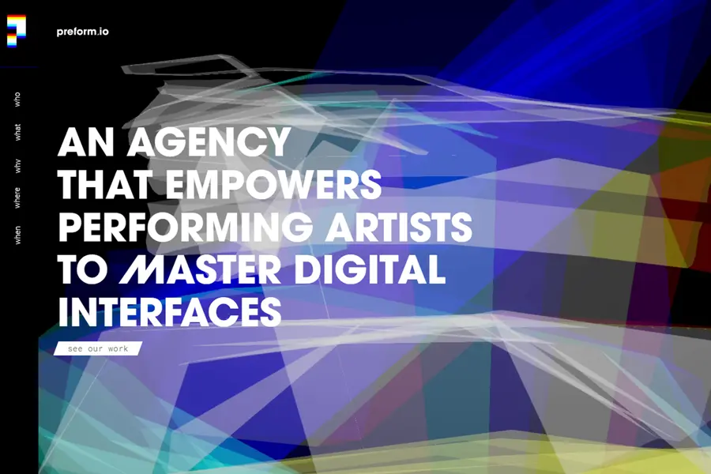
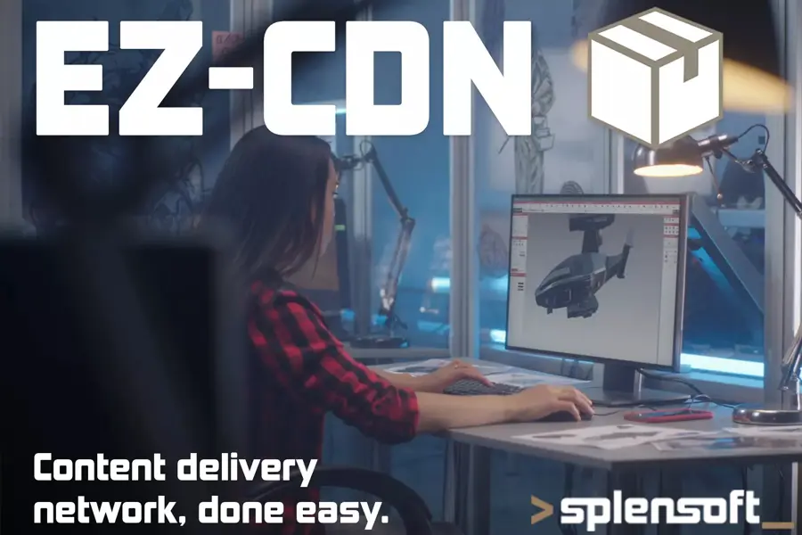
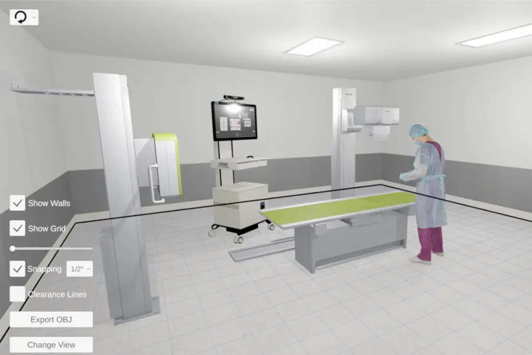
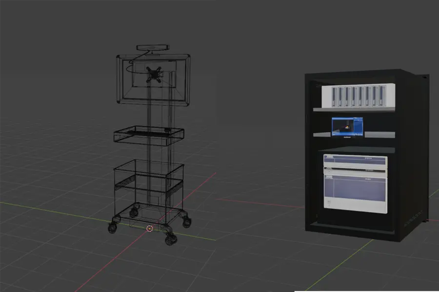

- Problem
- RC21X needed a dependable mobile product with a backend that could grow alongside it over years, not months.
- Approach
- An ASP.NET API on Azure with a SQL Server data layer, paired with a Unity front end — one engineer accountable from database to device.
- Result
- A live App Store product, continuously maintained and extended in a long-running engagement since July 2019.
John Cutlip · Founder, SplenSoft LLC · Pittsburgh, PA
Fractional CTO & senior full-stack engineering for SaaS teams
John Cutlip builds and rescues production systems on ASP.NET, Azure, SQL and React/TypeScript — and takes AI prototypes to production. Clinical-trial, mobile and enterprise apps, shipped.
Trusted by teams at RC21X, Pixl3D, and Wabtec
Services
Senior, hands-on engineering leadership. You work directly with John — no hand-offs.
Fractional CTO & architecture
Technical strategy, system design, roadmap and hiring support for SaaS teams that need senior leadership without a full-time hire.
Full-stack SaaS builds
Production systems on .NET / ASP.NET, Azure, SQL Server and React/TypeScript, with clean REST APIs from database to UI.
AI prototype → production
Hardening AI-generated or proof-of-concept code: security, data integrity, testing, observability and deployable infrastructure.
Code & architecture review
Focused review of your codebase and architecture with a prioritized, actionable report. $80/hr consult.
Add-on
Unity / WebGL / 3D
Interactive 3D, configurators and Unity front ends — shipped to mobile and the browser via WebGL.
Case studies
Problem → approach → result.
- Problem
- A national clinical trial for young adults with sickle cell disease needed an app for daily diaries, a 12-week digital CBT program and peer-coach tasks — where research data could never be lost or double-counted, even with unreliable connectivity.
- Approach
- John owns the full stack. The app is offline-first: entries wait in a serialized network queue and sync when connectivity returns. The backend acknowledges receipt and ingests asynchronously; records that fail go to an error table, are worked as a backlog and re-entered once fixed.
- Result
- Nothing lost, nothing duplicated — a trustworthy data pipeline behind a clinical-trial product.
- Problem
- Rockford Homes wanted buyers to design and personalize homes online, before ever visiting a model.
- Approach
- A Unity-based 3D home customizer, built with Pixl3D and shipped to the browser via WebGL as Rockford Homes’ Virtual Home Planner.
- Result
- Oct 2021–Mar 2022 · 2021 Best Virtual Sales Program award.3,030installs28Ksessions700leads
Unity / WebGL / 3D




About John
John Cutlip is the founder of SplenSoft LLC in Pittsburgh, PA. He has more than 20 years in software and over a decade running SaaS in enterprise applications, working almost exclusively full-stack.
His focus is production systems on ASP.NET/.NET, Azure, SQL Server and React/TypeScript, with well-designed REST APIs connecting them. He helps SaaS teams as a fractional CTO, leads architecture and code reviews, and takes AI prototypes to hardened, maintainable production software. Unity, WebGL and 3D work round out the toolkit for products that need it.